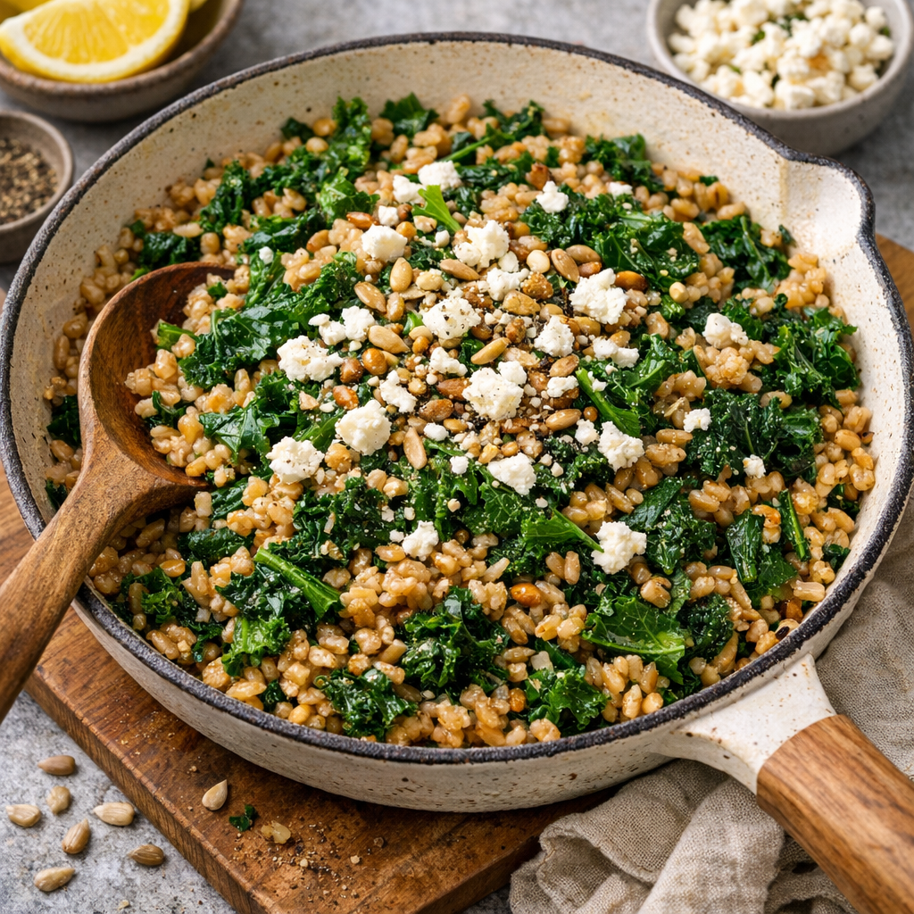

Farro and Kale Salad
Home

This is a description of the recipe.
Ingredients
- 1 tbsp olive oil
- 2 cloves garlic, minced
- 2 tsp lemon juice
- Salt and ground black pepper, to taste
- 2 cups vegetable broth
- 1 cup farro
- 2 cups chopped kale
- ½ cup crumbled feta cheese
Instructions
-
In a small bowl, whisk together olive oil, garlic, lemon juice, salt,
and pepper. Set aside.
-
In a large skillet or wok, combine vegetable broth and farro. Bring to a
boil, then reduce heat to medium and simmer for 20–25 minutes until the
farro is tender and most of the liquid is absorbed.
-
Stir the olive oil mixture into the cooked farro until evenly coated.
-
Mix in the chopped kale and cook for 2–3 minutes, stirring, until
wilted.
-
Sprinkle feta cheese over the salad, stir to combine, and adjust salt
and pepper to taste. Serve warm or at room temperature.